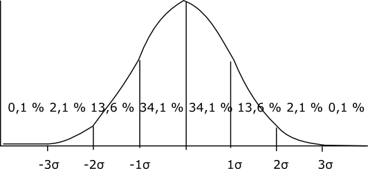

16. Normalfördelning
Anna, Bertil, Cecilia och Daniel märkte att då de gjorde sitt statistikarbete om kurskamraternas längd blev grafen med intervallen 10 cm formad så att största antalet var mellan 160 och 179 cm. De flesta personers längd var alltså nära medeltalet.
De blir ivriga och skickar ut en länk via sociala medier till sina vänner och släktingar där de frågar efter personens kön och längd. När de klassindelar datan i klasser om 5 cm ser det ut som följande:
| Längd | Män | Kvinnor | Totalt |
|---|---|---|---|
| 150-154 | 0 | 2 | 2 |
| 155-159 | 1 | 8 | 9 |
| 160-164 | 4 | 13 | 17 |
| 165-169 | 8 | 20 | 28 |
| 170-174 | 16 | 14 | 30 |
| 175-179 | 20 | 7 | 27 |
| 180-184 | 17 | 5 | 22 |
| 185-189 | 10 | 1 | 11 |
| 190-194 | 2 | 0 | 2 |

Vi märker att vi har tre toppar, en för män (blå), en för kvinnor (gul) och toppen för det gemensamma (grönt). Sedan avtar längderna mot kortare och längre. Fenomenet med att största delen av materialet har värden som är vid medeltalet och sedan avtar det kallas för normalfördelning.
Det att vi kan tillämpa normalfördelning på tex längd på människor, svansarnas längd på råttor och hur länge en mobiltelefon håller förrän den får något tekniskt fel hjälper oss att förutspå statistiska händelser.
Medeltalet för männens längd blir 177 cm, kvinnorna 168 cm och totalt 173 cm. Standardavvikelsen blir 7,5 cm, 7,7 cm och 8,8 cm (som vi avrundar till 9 cm).
Vi tittar närmare på normalfördelningen för den totala längden. Eftersom vi går till att tala om en hel population talar vi inte om medelvärdet utan väntevärdet 173 cm. Inom den första standarden har vi 34,1 % + 34,1 % = 68,2 % av populationen och deras längd varierar 173 - 9 cm = 164 cm och 173 + 9 = 182 cm.
Inom två standarder har vi 13,6 % + 34,1 % + 34,1 % + 13,6 % = 95,4 %. Längdintervallet blir 155 cm till 191 cm.

För att lättare kunna räkna exakta andelar av en population som rör sig inom vissa gränser arbetar man med normalfördelningens fördelningsfunktion, \( \phi (x)=\dfrac{1}{\sqrt{2\pi}} \displaystyle \int_{-\infty}^x e^{-\dfrac{t^2}{2}} \textrm{d }t \). För att få värden som normalfördelningen ger oss använder vi oss av tabellen på sid 61 i MAOL, tabellen på Wikipedia eller tabellen i cheat.abitti.fi( klicka på Matematik och Sannolikhetsfördelningar).
För mera teori om Normalfördelningen se här.
Det som det betyder är att för att få exakta värden måste vi först standardisera vårt material förrän vi kan räkna med det.
Exempel 1 Då vi utgår från materialet som Anna, Bertil, Cecilia och Daniel gjorde.
- Hur många procent av populationen är kortare än 180 cm?
- Hur många procent av populationen är längre än 170 cm?
- Hur många procent är populationen är mellan 175 cm och 185 cm?
Exempel 2 Längden för svansarna hos en apstam är normalfördelade. Väntevärdet är 25 cm och standardavvikelsen är 4 cm.
- Hur stor del av stammen har svansar som är kortare än 31 cm?
- Hur stor del av stammen har svansar som är längre än 30 cm?
- Hur stor del av stammen har svansar som är mellan 23 cm och 28 cm?
Lösning
- Eftersom längden för svansarna följer normalfördelningen betecknar vi N(25,6). Vi får \( P(X \leq 31 ) = P(Z < \dfrac{31-25}{6})=\Phi(1) = 0,8413 \). 84,1 % av apstammen har svansar som är kortare än 31 cm.
- Nu söker vi \( P(X \geq 30) = 1- P(X < 30) = 1 - P(Z < \dfrac{30-25}{6}) \\ = 1-\Phi(0,833\ldots) = 1 - 0,7967 = 0,2033 \) . 20,3 % av apstammen har svansar som är längre än 30 cm.
Här igen är vi intresserade av \( P(23 \leq X \leq 28) = P (\dfrac{23-25}{6} \leq Z \leq \dfrac{28-25}{6} )= \Phi(0,5) -\Phi(-0,33\ldots) \\ = \Phi(0,5) -(1-\Phi(0,33\ldots)) = 0,6915-(1-0,6293) \\ = 0,6915 - 0,3707 = 0,3208 \).
Alltså 32,1 % av aporna har en svans som är mellan 23 och 28 cm.
Exempel 3 Garantin hos en surfplatta är 12 månader. Hur stor del av surfplattorna måste tillverkaren reparera på garanti då väntevärdet för att en surfplatta fungerar utan tekniska problem är 14 månader och standardavvikelsen är 1 månad?
Lösning
Det att en surfplatta går sönder är normalfördelat, N(14,1).
Det vi söker är \( P(X \leq 12) = P(Z \leq \dfrac{12-14}{1} )= \Phi(-2) = 1-\Phi(2) = 1-0,9772 = 0,0228 \).
2,3 % av surfplattorna behöver service under garantin.
Lösningen på GeoGebra
För att bestämm normalfördelningen kan du antingen jobba med GeoGebras statistikdel eller så i CAS utnyttja dig av kommandot normalfördelning().
I TI-Nspire använder vi oss av normCdf(). Den använder du dig som normCdf(undre gränsen, övre gränsen, väntevärde, standardavvikelsen).
Exempel 4 Hur stor borde standardavvikelsen vara för att en mobiltelefontillverkare endast skall behöva reparera högst 5 % av mobiltelefonerna på garanti då väntevärdet för att telefonen håller är 16 månader och garantin är 12 månader.
Lösning
Hållbarheten hos mobiltelefonen är normalfördelat, N(16,\( \sigma \)). 5 % betyder att normalfördelningen skall ha värdet 1,65. Det som vi nu söker är \( P(X \leq 12) = P(Z \leq \dfrac{16-12}{\sigma} ) = 1,6449 \). Vi löser ekvationen.
\( \begin{array}{rcl} \dfrac{16-12}{\sigma} & = & 1,6449 \\ \sigma & = & \dfrac{16-12}{1,6449} = 2,43 \\ \end{array} \)
Standardavvikelsen skall var 2,4 månader.
För då vi räknar med normalfördelning använder vi oss av följande formler
- \( \Phi(-a) = 1-\Phi(a) \)
- \( P(X\leq 1,23) =\Phi(1,23) = 0,8907 \)
- \( P(0,10 \leq X \leq 0,75) = \Phi(0,75) - \Phi(0,10) \)
- \( P(X \geq 1,57) = 1- P(X\leq 1,57) \)
För att använda oss av färdiga värden från tabeller gäller vid normeringen av \( N(\mu,\sigma) \) att \( P(X\leq a) = P(Z \leq \dfrac{a-\mu}{\sigma}) \).
Uppgifter
- Längden för gurkor som säljs i affärer är normalfördelade. Väntevärdet är 33 cm och standardavvikelsen är 3 cm. Kom ihåg att vi har N(33,3)
- Hur många procent av gurkorna är kortare än 35 cm?
Vi får att \( P(X\leq 35)=P(Z\leq \dfrac{35-33}{3}) \approx \Phi (0,66) = 0,7454 \). Alltså 74,5 %.
- Hur många procent av gurkorna är längre än 40 cm?
Vi har \( P(X\geq 40) = 1-P(X\leq 40) = 1-P(Z\leq \dfrac{40-33}{3}) \\ \approx 1 - \Phi(2,33) = 1- 0,9901 =0,0099 \). Alltså 1,0 %.
- Hur många procent av gurkorna är mellan 30 cm och 38 cm?
Vi har
\( \begin{array}{rcl} P(30 \leq X 38) & = & P(\dfrac{30-33}{3} \leq X \leq \dfrac{38-33}{3}) \\ & \approx& P(-1 \leq X \leq 1,66) \\ & = & \Phi(1,66) -\Phi(-1) = \Phi(1,66) -(1-\Phi(1)) \\ & = & 0,9515-1+0,8413 = 0,7928 \end{array} \)
Alltså 79,3 %.
- Hur många procent av gurkorna är kortare än 35 cm?
- Längden hos människor är normalfördelad. För finska män gäller att väntevärdet för en fullvuxen är 181 cm. Standardavvikelsen är 6,0 cm.
- Hur många procent av fullvuxna finska män är kortare än 178 cm?
Vi har \( P(X \leq 178) = P(Z \leq \dfrac{178-181}{6}) = \Phi(-0.5) = 1-\Phi(0,5) \approx 1- 0,6915=0,3085 \). Alltså 30,9 %.
- Hur många procent av fullvuxna finska män är längre än 175 cm?
Vi har
\( \begin{array}{rcl} P(X \geq 175) & = & 1-P(X\leq 175) = 1-P(Z\leq \dfrac{175-181}{6}) \\ & \approx & 1- \Phi(-1) = 1-(1-\Phi(1)) = 1-1+\Phi(1) = 0,8413 \end{array} \)
Alltså 84,1%.
- Hur många procent av fullvuxna finska män är mellan 170 och 190 cm långa?
Vi har
\( \begin{array}{rcl} P(170 \leq X \leq 190) & = & P(\dfrac{170-181}{6} \leq Z \leq \dfrac{190-181}{6}) \\ & \approx & \Phi(1,5) - \Phi(-1,83) =\Phi(1,5) - (1-\Phi(1,83)) \\ & = & 0,9332-1+0,9664 = 0,8996 \end{array} \).
Alltså 90,0 %.
- Hur många procent av fullvuxna finska män är kortare än 178 cm?
- Paket av grötflingor packas så att de i medeltal väger 308 g med standardavvikelsen 10 g. Hur många procent av paketen väger mindre än 300 g, som anges på paketet? Svara med en decimals noggrannheten.
Vi har N(308,10).
Sannolikheten är \( P(X\leq 300)= P(Z\leq \dfrac{300-308}{10} = \Phi(-0,8) = 1-\Phi(0,8) \approx 1-0,7881 = 0,2119 \).
Alltså 21,2 %.
- Garantitiden för ett bilmärke är 5 år. Hos bilarna uppstår fel med väntevärdet 70 månader och standardavvikelsen är 9 månader. Hos hur många procent av bilarna uppstår det fel under garantitiden?
Vi har N(70,9).
Vi söker \( P(X\leq 60) = P(Z\leq \dfrac{60-70}{9})\approx \Phi(-1,11) = 1-\Phi(1,11) = 1-0,8665 = 0,1335 \).
Alltså 13,4 %.
- Längden hos nyfödda flickor i Finland följer i stort sett en normalfördelning. För längden gäller att väntevärdet är 50 cm och standardavvikelsen är 3 cm.
- Hur mång procent av de nyfödda flickorna har en längd i intervallet 45 - 55 cm?
Vi har (50,3)
Vi söker
\( \begin{array}{rcl} P( 45 \leq X \leq 55) & = & P(\dfrac{45-50}{3} \leq Z \leq \dfrac{55-50}{3}) \\ & = & \Phi(\dfrac{5}{3})-\Phi(-\dfrac{5}{3}) \\ & = & \Phi(\dfrac{5}{3})-(1-\Phi(\dfrac{5}{3})) \\ & = & 0,9515 -(1-0,9515) = 0,903 \\ \end{array} \)
Alltså 90,3 %.
- År 2015 föddes 27 044 flickor i Finland. Hur många hade en längd i intervallet 45 till 55 cm?
Vi får \( 0,903 \cdot 27044 = 24420,732 \approx 24421 \).
Alltså 24421 eller 24420 stycken.
- Hur många flickor som föddes år 2015 föddes längre än 60 cm?
Vi får
\( \begin{array}{rcl} P( X \geq 60 ) & = & 1 - P(X \leq 60) \\ & = & 1 - P(Z \leq \dfrac{60-50}{3}) \\ & = & 1 - \Phi(\dfrac{10}{3}) \\ & = & 1 - 0,9996 = 0,0004 \\ \end{array} \)
Antalet är \( 0,0004 \cdot 27044 = 10,8176 \approx 11 \).
Alltså 11 st.
- Hur mång procent av de nyfödda flickorna har en längd i intervallet 45 - 55 cm?
- Tiden som det tar att för Daniel att ta sig hem från skolan följer normalfördelningen. Väntevärdet är 48 minuter och standardavvikelsen är 7 minuter. Bestäm sannolikheten att resan tar
- högst en timme.
Vi har (48,7)
Vi söker
\( \begin{array}{rcl} P( X \leq 60) & = & Z \leq \dfrac{60-48}{7}) \\ & = & \Phi(\dfrac{12}{7}) \\ & = & 0,9564 \\ \end{array} \)
Alltså 95,6 %.
- 50 - 60 minuter.
Vi får
\( \begin{array}{rcl} P( 50 \leq X \leq 60) & = & P(\dfrac{60-48}{7} \leq Z \leq \dfrac{50-48}{7}) \\ & = & \Phi(\dfrac{12}{7})-\Phi(\dfrac{2}{7}) \\ & = & 0,9564 -0,6141 = 0,3423 \\ \end{array} \)
Alltså 34,2 %.
- högst en timme.
- En däcktillverkare bestämmer sig för att medelhållbarheten för däcken skall vara 45 000 km och att 99,9 % av däcken skall hålla körsträckan 46 000 utan problem. Bestäm standardavvikelsen i km för att detta skall uppfyllas.
Vi har \( N(45000, \sigma) \).
Vi söker \( P(X \leq 46000) = P(Z\leq \dfrac{46000-45000}{\sigma} \).
För sannolikheten gäller att 99,9 % är \( 0,999 = \Phi(3,0902) \).
Vi får alltså \( \dfrac{46000-45000}{\sigma} = 3,0902 \) som har lösningen \( \sigma = 323,60 \). Alltså 320 km.
- Vid en äppelodling sorteras äpplena enligt vikt. Vikten för äpplen kan ses normalfördelad med väntevärdet 60 g och standardavvikelsen 10 g. Man vill sortera äpplena i tre viktklasser, så att 25 % bedöms som små, 50 % som medelstora och 25 % som stora. Hur skall dessa gränser väljas med en grams noggrannhet?
För den tyngsta 25 % gäller: \( P(Z \leq \dfrac{X-60}{10}) \) skall få värdet som motsvaras av \( \Phi(x)=0,75 \).
Alltså \( P(Z \leq \dfrac{X-60}{10})=0,67 \) som ger \( X=66,7 \) g.
Eftersom normalfördelningen är symmetrisk är avståndet mellan variansen och tyngsta 25 % samma som variansen och lättaste 25 %.
Den här vägen kommer vi åt gränserna 66,7 g och 53,3 g.
Allstå 53 g och 67 g.
- Väntevärdet för att det skall uppstå problem hos en mobiltelefon är 14 månader med standardavvikelsen 2 månader. Hur lång garanti, i månader, kan tillverkaren lova om de endast vill reparera 10 % av mobiltelefonerna under garantitiden?
\( P(Z = \dfrac{X-14}{2}) \) skall ha värdet 1,2816 som motsvaras av lägsta eller högsta 5 %.
Ekvationen ger lösningen 16,5632 som betyder att på avståndet 2,5632 från väntevärdet hittar vi lägsta och högsta 5 %.
Den gräns som vi söker är 11,4368 månader.
- Vid en hastighetskontroll konstaterades att 30 % av bilarna hade en hastighet under 60 km/h och 75 % under 80 km/h. Vi antar att bilarnas hastigheter följder en normalfördelning. Bestäm bilarnas medelhastighet och standardavvikelse.
Vi jobbar med de normerade värdena. Då gäller att \( P (X \leq 60) = 0,30 \).
Vi får att \( P(Z \leq \dfrac{60-\mu}{\sigma}) = 0,30 \). Eftersom tabellvärdena börjar vid 0,50 jobbar vi via komplementet. Vi söker \( \Phi(X) < 0,30 \), som är samma som \( 1- \Phi(X) > 0,30 \).
Vi får \( 1 - P(Z \leq \dfrac{60-\mu}{\sigma}) = 0,30 \), alltså \( P(Z \leq \dfrac{60-\mu}{\sigma}) = 0,70 \).
Vi får \( \dfrac{60-\mu}{\sigma} = -0,52 \). Minustecknet är med för att sannolikheten är mindre än 50%.
Det andra kriteriet ger oss \( P(Z \leq \dfrac{80-\mu}{\sigma}) = 0,75 \).
Vi får \( \dfrac{80-\mu}{\sigma} = 0,67 \).
Vi har ekvationssystemet
\( \left\{ \begin{array}{l} \dfrac{60-\mu}{\sigma} = -0,52 \\ \dfrac{80-\mu}{\sigma} = 0,67 \\ \end{array} \right. \)
Vi får lösningarna \( \mu = 68,73\ldots \) och \( \sigma = 16,80\ldots \).
Medelhastigheten är 69 km/h och standardavvikelsen är 17 km/h.
- Vitsordsfördelningen studentexamen i lång matematik är följande: l 5 %, e 15 %, m 20 %, c 21 %, b 19 %, a 15 % och i 5 %. Ett år var gränsen för approbatur, a, 26 poäng och gränsen för eximia 86 poäng.
Bestäm poängmedeltalet och standardavvikelsen för den långa matematiken detta år. Bestäm dessutom poänggränserna för de övriga vitsorden då resultaten är apporximativt normalfördelade.
Vi bildar två ekvationer som vi löser i ett ekvationssystem.
Den första är \( P(X \leq \dfrac{26 - \mu}{\sigma}) = 0,05 \).
Den andra är \( P(X \leq \dfrac{86 - \mu}{\sigma}) = 0,80 \).
Vi får ekvationssystemet
\( \left\{ \begin{array}{l} \Phi (\dfrac{26 - \mu}{\sigma}) = 0,05 \\ \Phi (\dfrac{86 - \mu}{\sigma}) = 0,80 \\ \end{array} \right. \)
Som betyder att
\( \left\{ \begin{array}{l} \Phi (\dfrac{26 - \mu}{\sigma}) = -1,64 \\ \Phi (\dfrac{86 - \mu}{\sigma}) = 0,84 \\ \end{array} \right. \)
Ekvationssystemet har lösningarna \( \mu = 65,677\ldots \) och \( \sigma = 24,19\ldots \).
Medeltalet är 65,6 poäng och standardavvikelsen är 24,2 poäng.
De övriga gränserna är följande.
b: \( \Phi(\dfrac{x-65,6}{24,2}) = 0,20 \). Alltså \( \dfrac{x-65,6}{24,2} = -0,84 \) ger \( x = 45,23 \). Gräsen för b är 45 poäng.
c: \( \Phi(\dfrac{x-65,6}{24,2}) = 0,39 \). Alltså \( \dfrac{x-65,6}{24,2} = -0,28 \) ger \( x = 58,84 \). Gräsen för c är 59 poäng.
m: \( \Phi(\dfrac{x-65,6}{24,2}) = 0,60 \). Alltså \( \dfrac{x-65,6}{24,2} = 0,25 \) ger \( x = 71,73 \). Gräsen för m är 71 poäng.
l: \( \Phi(\dfrac{x-65,6}{24,2}) = 0,95 \). Alltså \( \dfrac{x-65,6}{24,2} = 1,64 \) ger \( x = 105,41 \). Gräsen för l är 105 poäng.